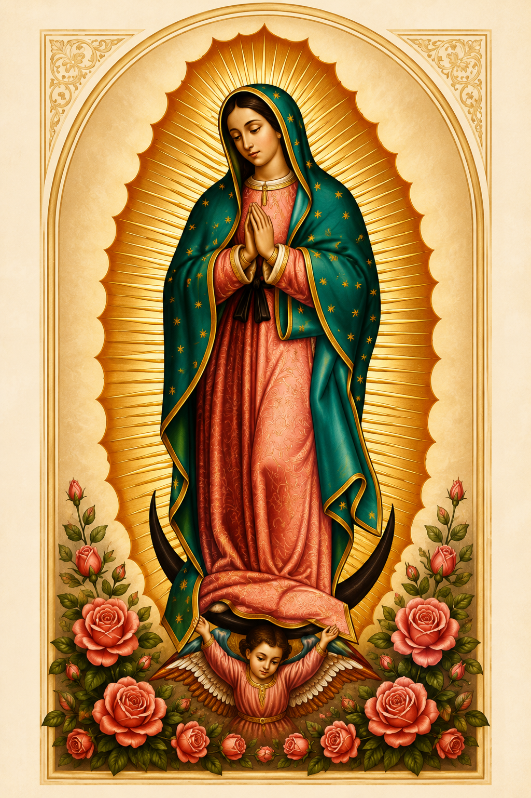

Momentos de oração
Instantes de silêncio, louvor e entrega que fortalecem a fé e a comunhão.
Sob a proteção de Nossa Senhora de Guadalupe
Guarde aqui as fotos e recordações do TLC, um mural bonito, organizado e cheio de memória viva.

Este site foi criado para reunir fotos, vídeos, mensagens e lembranças do TLC, um encontro que transforma e deixa fé, amizade e missão.
A inspiração vem do nosso desejo de celebrar o que vivemos juntos e manter acesa a presença de Deus em cada história compartilhada.
Instantes de silêncio, louvor e entrega que fortalecem a fé e a comunhão.
Atividades que aproximam os participantes com leveza, alegria e propósito divino.
Reflexões inspiradoras sobre vocação, amor, serviço e fé para toda a vida.
A celebração central do encontro, cheia da Eucaristia que nos transforma.
Servidores que preparam cada detalhe com carinho, oração e dedicação.
O registro coletivo que fica como lembrança e gratidão para sempre.
Ao descer a página, acompanhe a luz passando pelas etapas que fazem o TLC acontecer: acolhida, oração, palavra, partilha, Eucaristia e serviço.
Continue descendo para acompanhar o caminhoReceber cada pessoa com carinho, atenção e alegria.
É aqui que o jovem percebe que tem lugar, nome e uma comunidade pronta para caminhar junto.
Um encontro verdadeiro com Deus e consigo mesmo.
A oração acalma, fortalece e prepara o coração para tudo o que será vivido no encontro.
Reflexões que ajudam a enxergar a vida com outros olhos.
Cada mensagem convida a pensar, mudar e levar a fé para as escolhas do dia a dia.
Momentos para criar laços, confiança e boas lembranças.
A convivência aproxima as pessoas e mostra que a caminhada fica mais leve quando ninguém está sozinho.
A celebração que reúne tudo o que foi vivido.
Na Eucaristia, cada oração, amizade e aprendizado se transforma em gratidão e compromisso.
Servir juntos para que cada detalhe tenha significado.
Quem serve também é transformado e mantém o encontro vivo muito depois do último dia.
Passe o mouse ou toque nos cartões para ler mais.
Os números abaixo vão mudando conforme o site vai sendo preenchido com pessoas, fotos e pedidos.
Corações que dizem sim ao encontro.
Momentos eternizados com amor.
Unidos em oração, fortalecidos na fé.
Cada serviço é uma semente do Reino.
Relatos que inspiram e edificam.
Ir ao encontro e ser presença de Deus.
Um cantinho para pedir, agradecer e rezar por quem precisa.